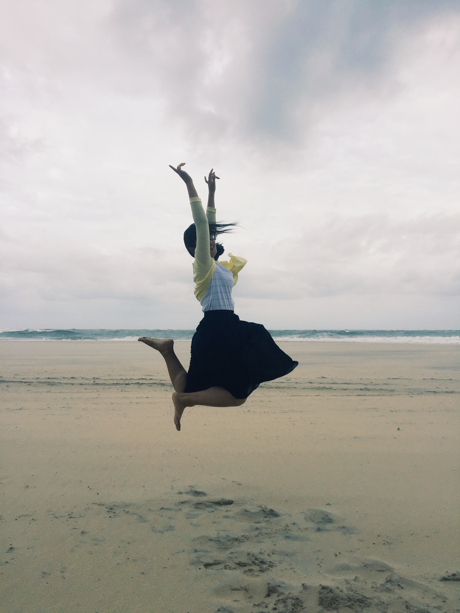

Iris Gou | 无限充电
-
{% for category in site.categories %}
- {{ category | first }} ({{ category | last | size }})
{% endfor %}
跳出我天地
September 05th, 2016
用这个标题，先是为了致敬一下我很喜爱的一部同名电影，也是为了对来美国的这大半个月的总结。
是的，从8月15日起飞，到现在，已经过去了大半个月，我在美国已经安了家，认识了一些人，去过一些地方，尝试自己做菜，开始了为学业奋斗的日子。在8月底自己从纽约回来，遭遇大巴半路抛锚，走去地铁站路上一个人都没有，还被黑人大叫的场景吓到之后，我才真正了解到我已经离开了最熟悉的地方，要真正开始独自面对这一切了。
昨天晚上，几个好友在聚餐之后，回到公寓，准备开个小Party。结果意料之外的，是在玩游戏尽兴后，不知不觉地就各自讲起了自己的故事，然后直到深夜。他们有的情场失意，对ex那么好却还是以悲剧收场，有的因为父母不支持自己而暂时放弃了自己已经初见雏形的梦想，还有的虽然现在很幸福却也曾经有让人满怀惆怅的过去。话题有些沉重，气氛也有些阴沉，偶尔也会因几个小笑话而露出笑容，但心中却是对各自过去现在以及将来生活的苦涩。
一般这种场合，我是话不多的。因为我似乎从没有想过要把我的故事以这种形式告知于众，最多也是一对一地对别人提起过，却也是断断续续，没有完整的部分。也许是我觉得过去的就过去的，只能留给自己和那些曾拥有过这些的人，给陌生人讲述他们也无法感同身受吧。回想起大学毕业的那一年，我先后经历一个人出差宣讲，公司倒闭，另一家公司的衰落，学英语和准备出国，再一家公司的崛起，以及等待录取的那段时间的煎熬。这一年过得特别快，快到我觉得我都没在自己的房间里住过多久，快到觉得还没有学到什么东西，快到还没有细细品味生活里发生的各种事情的滋味。
快到不知道自己简历上该写些什么。于是给了自己忠告，一定要在这异国他乡收获什么，不单单是经历，还有对于专业知识的掌握和适应社会能力的培养。更重要的是，对于自己很容易因为放松而打破原有计划的自律的觉醒。
想想来的这大半个月里，也开始慢慢适应了。知道自己还有很多需要学习的，从认识的人身上，不认识的人身上，还有教授们的身上。把每天都过得充实，多给自己时间，独处，写作，看书，看电影，旅行。也开始越来越喜欢美国，喜欢DC，在这所政治的城市里，感受知识和文化，成为一个多元化的人。
还有一个明显的感受是，美国的教育方式的确是更靠自觉的，于是为了给自己一个更好的结果，我似乎比以前更加有努力的意识了，并付诸了行动，暂时忘却了社交之类的需求。我甚至可以说，在我看来，这是个对自我更宽容的地方，你会慢慢发觉自己也是与众不同的，你也可以在这个地方发挥所长。无论你是胖瘦，你是美丑，你也可以与老师进行争辩，在图书馆里奋笔疾书，去学校旁边的餐馆吃个minibowl。
我一直在努力让自己跳出舒适圈，也还有很多事情需要我跳出以前的思维，一件一件突破自己。我相信我可以做好。
Read more开场序曲
February 27th, 2016
一起发光

2015年最后一天，我去了位于台湾南投的「忘忧森林」。很可惜，因为冬季，森林中清澈的湖泊蒸发完全，只留下了一些枯枝残叶落在土地上。但是，也格外幸运的，看见了山岚。我就站在阳光与山岚中拍了这张照片。
这是我2015年最喜欢的一张关于自己的照片，好像在发光。仿佛经历过的一件件事情都让自己更加的强大，然后可以微笑着用平和的心态来对待。
而我也清楚地知道，我们不可能永远都处于发光的状态，反而更多的时候都在黑暗中摸爬滚打，挣扎抗争。尤其是从大学毕业以后，慢慢发现，这个阶段似乎是最看不到什么成绩的，但是为了十年后能看到一份令自己满意的答卷，就应该利用现在开始不断学习，不断思考，为自己充电。
无限充电
所以我给这个博客起名为「无限充电」，希望可以利用这里写一些自己的想法与感悟，督促自己更有逻辑地思考和表达。而我的名字的最后一个字的拼音是 Qi，刚好是无线充电的标准，这种巧合更加提醒我自己不应该急功近利，而是相信不断的积累才能带来改变，习惯成自然，量变才能质变。
我也希望每一个看到我这些文字的人，可以给自己多些时间，看本书、看部电
Read more